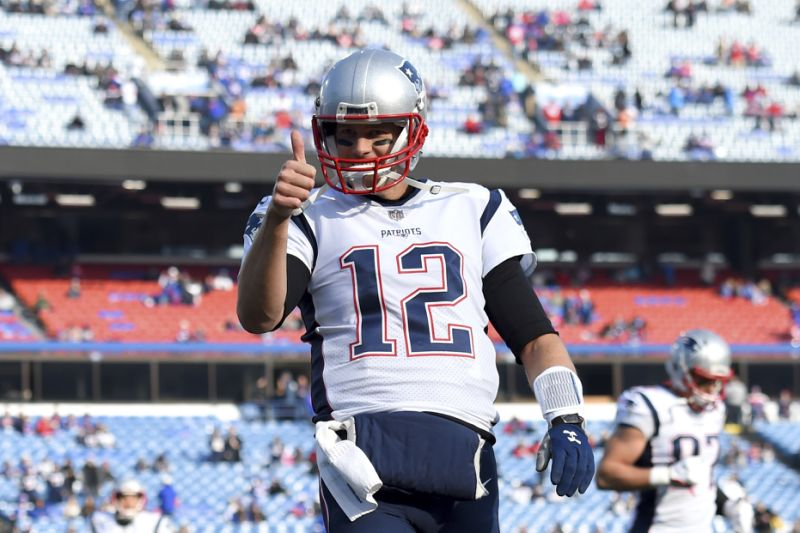
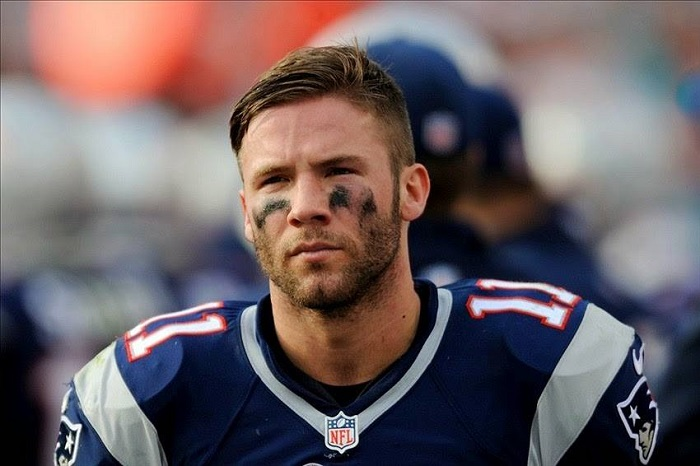
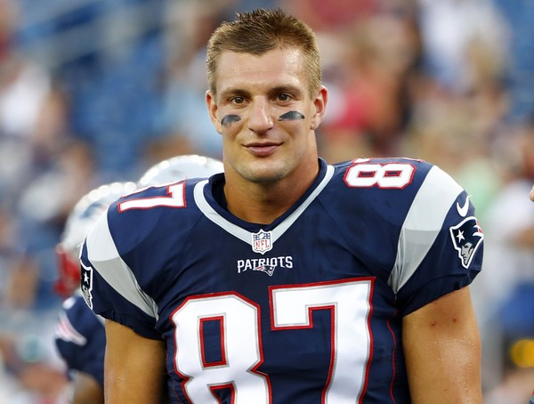

#1 Tom Brady
Tom Brady is the quarterback of the New England Patriots. He has has the most consistant statistics than any other playerin the NFL. He is 40 years old and has the mentality that he is in his prime.

#2 Julian Edelman
Julian is number two on this list. Out of all the superbowls Julian has played with Tom, they would not have won 3 of them without this man. He is an unstoppable force and one of the best wide recievers in the game.

Rob Gronkowski
Gronk is a tight end for the New England Patriots, perhaps the best one this franchise has ever seen. He is 6'6 and weighs 265 pounds. You do not want to step in front of this man with a football.
